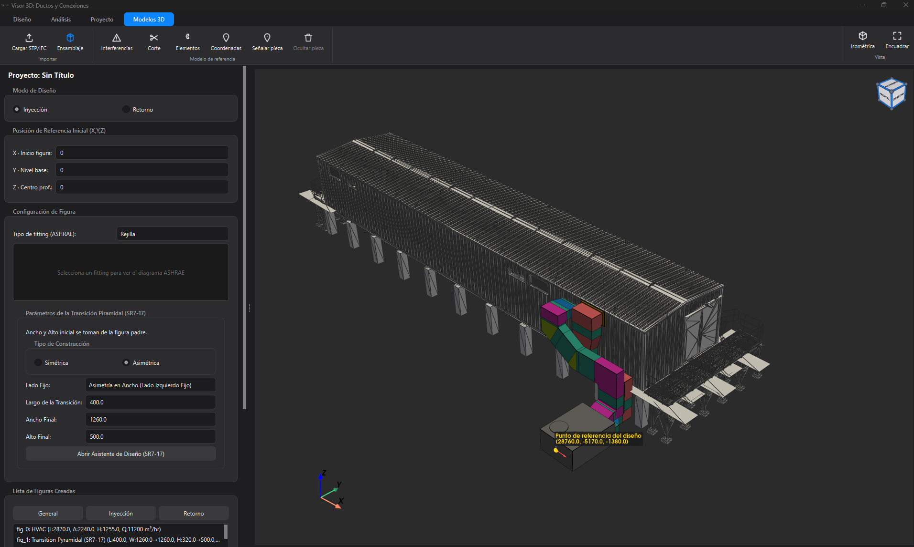
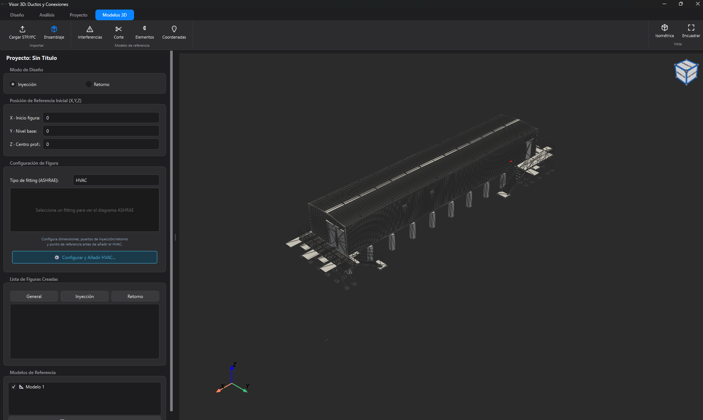

Motor de cálculo
La física, resuelta en vivo
ΔPf = f · (L/Dh) · ρV²/2
Darcy–Weisbach, Colebrook y Altshul, las ecuaciones del ASHRAE Handbook, se resuelven en tiempo real para cada tramo de la red durante el modelado. Sin factores de seguridad inventados.
BernoulliReynoldsPresión dinámicaRuta crítica
Base de datos normada
36
Tablas ASHRAE digitalizadas a mano
Cada accesorio (codos, uniones TEE, transiciones, dampers) obtiene su coeficiente interpolando las tablas oficiales del ASHRAE Duct Fitting Database en 1, 2 y hasta 3 dimensiones.
CR3-1SR5-13SR7-17SR2-3 · 3D+32 más
Edificios reales
15.000
Elementos BIM en escena
Abre los formatos con que la industria proyecta (IFC/STEP), filtra en vivo y detecta choques entre ductos y estructura.
Optimización
3
Métodos automáticos
Por elemento, por ruta crítica y dimensionamiento Equal Friction. El programa propone las medidas óptimas por ti.
Documentos
27
Páginas compiladas en LaTeX
La memoria de cálculo se compone y compila sola, con portada, planos, tablas y metodología. Además, la red se exporta a IFC y DXF.
Diagnóstico
Ruta crítica y presión del equipo, de un vistazo
Cada corrida entrega el TESP que debe vencer el ventilador, la ruta más restrictiva de inyección, la de retorno y el detalle de pérdida por sección, para decidir dónde intervenir primero.
En proyectos reales
Probado sobre modelos BIM de edificios reales
La red se dibuja directamente sobre el modelo IFC/STEP del edificio: ocupa el mismo espacio que la estructura, la sala eléctrica y el resto de las disciplinas, en vez de vivir en un plano aislado.

